실제 Flutter 앱 위젯 렌더링 · 홈과 리더 디자인 유지 · 기기 설치 전 검증
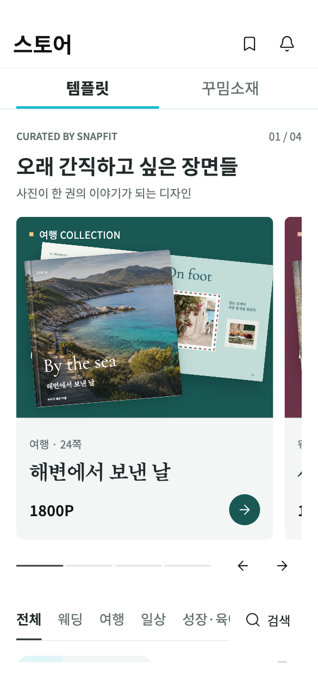
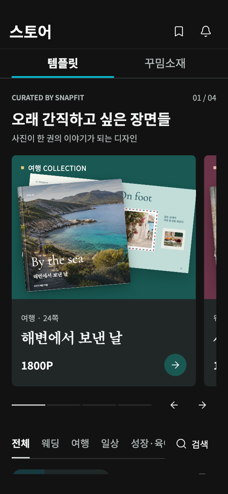
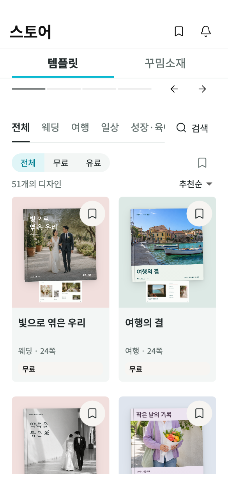
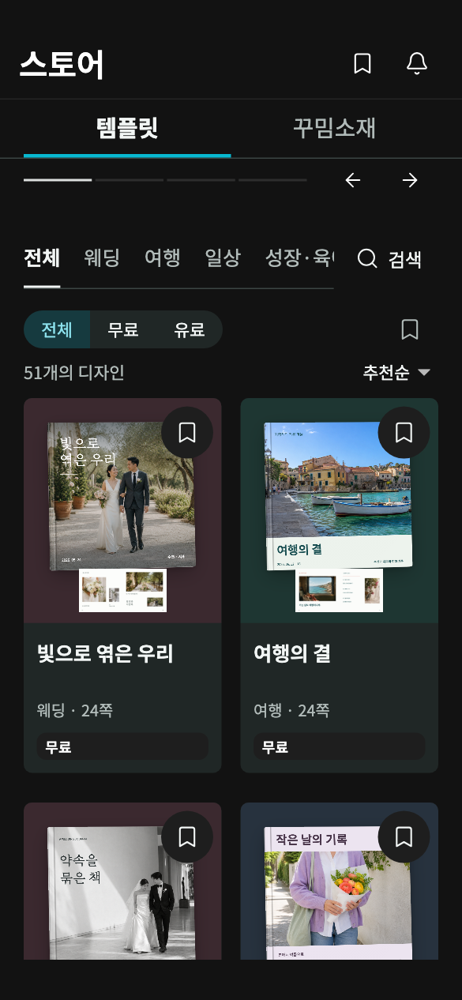
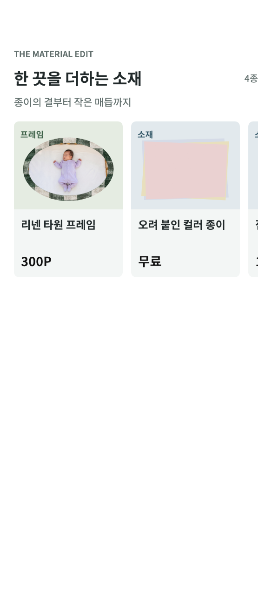
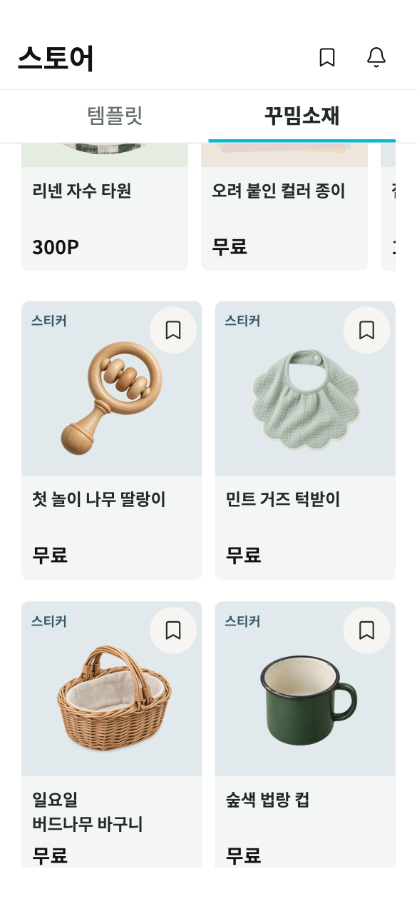
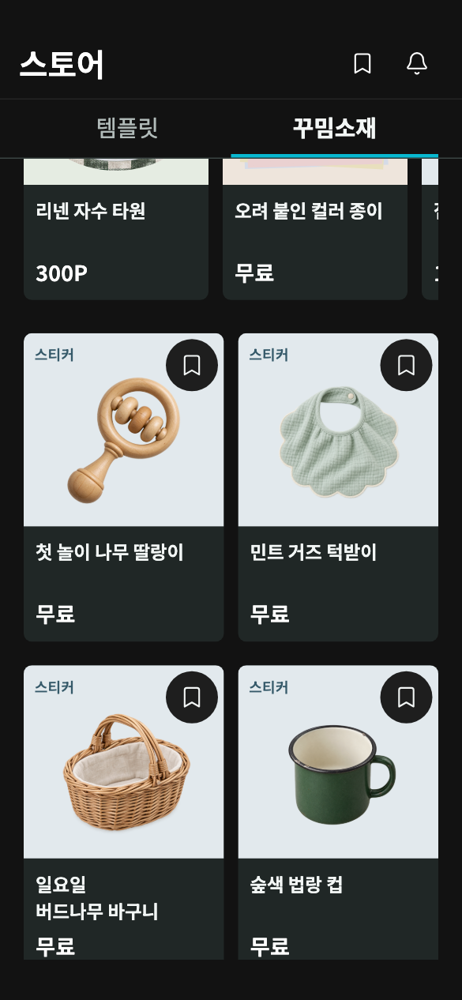
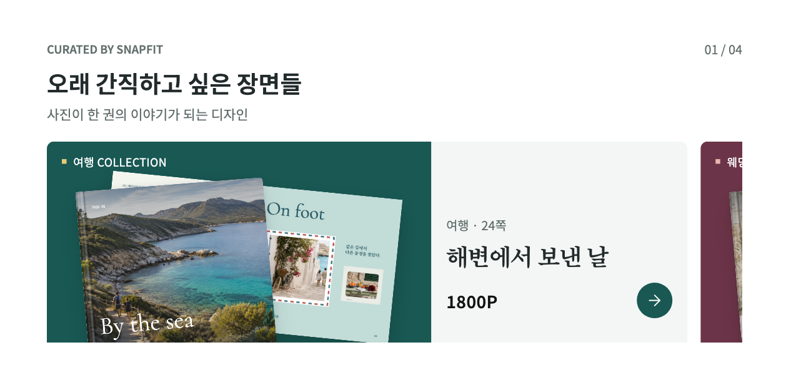
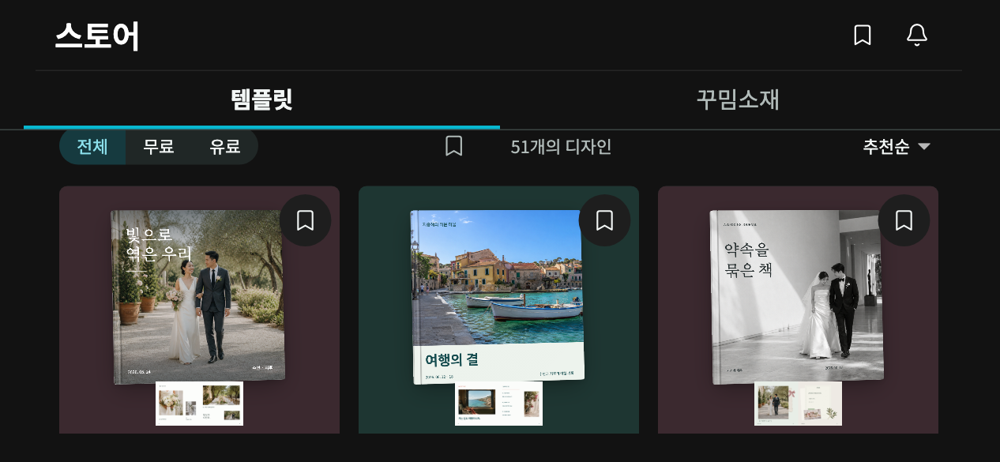
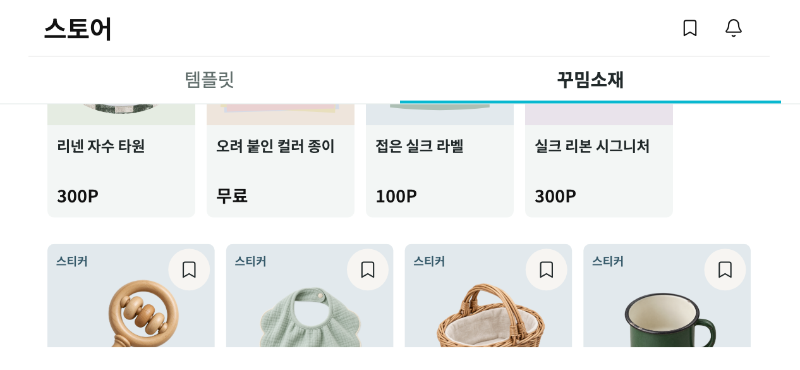
템플릿·소재별 제목, 소개, 상품 선택, 순서 이동, 숨김을 관리합니다. 저장 후 앱 스토어에서 당겨서 새로고침하면 반영됩니다.
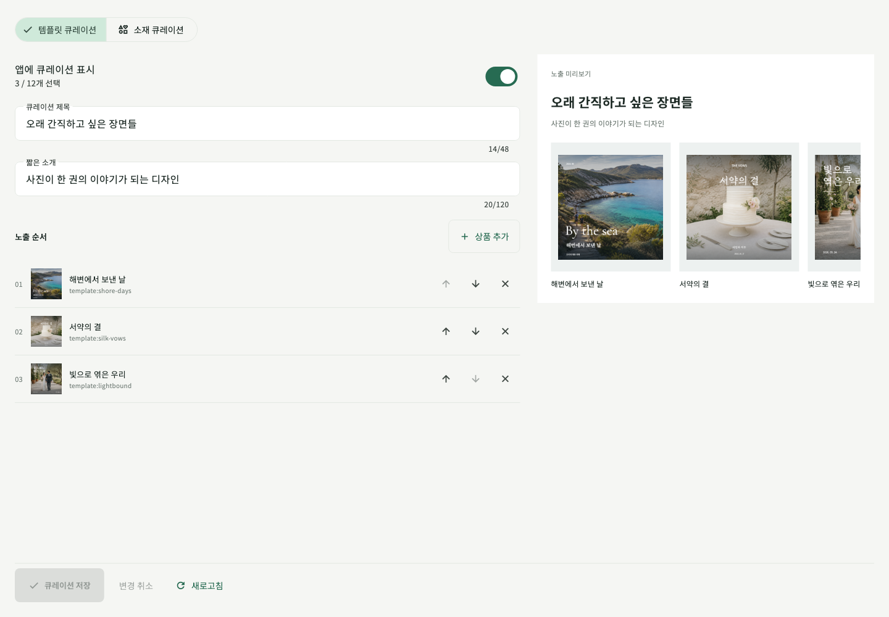
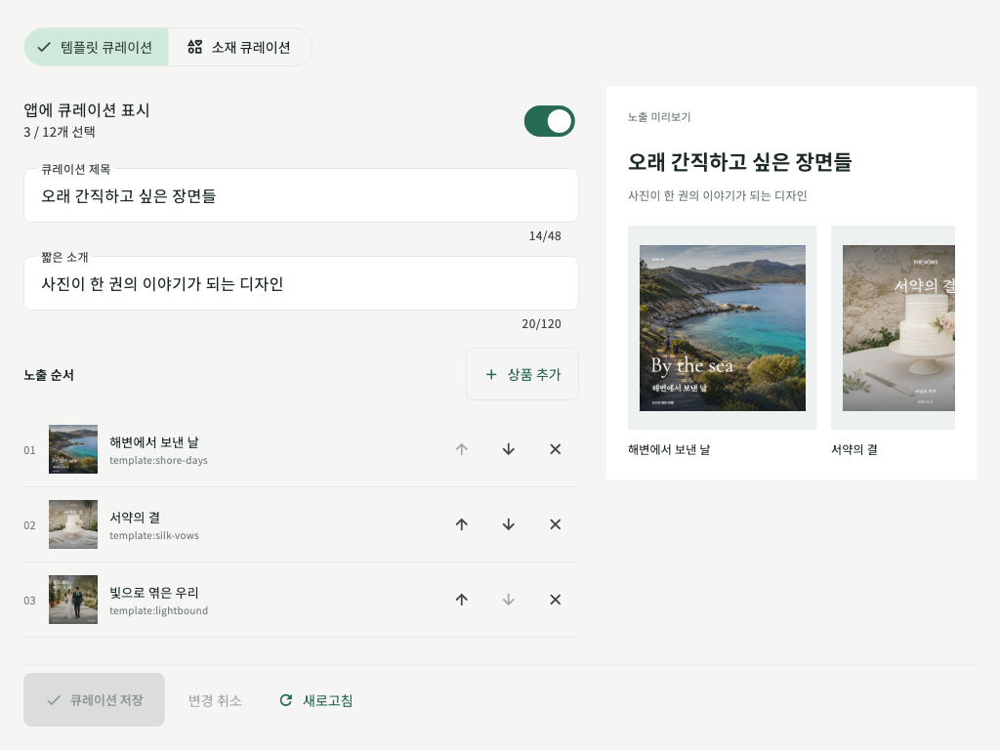
상품 가격·소유권·구매 정책은 이번 개편에서 변경하지 않았습니다. 화면 이미지는 결제나 주문을 실행하지 않는 테스트 데이터입니다.